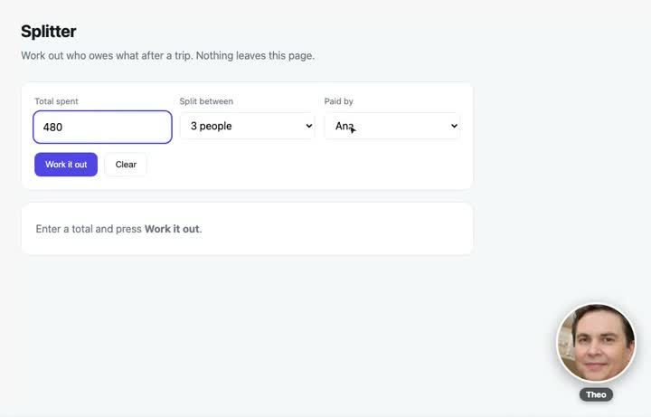

Before this holds
Watch what it does to three of them.
You said "Feature tours never open on price. Open on what the person can now do."
Skimming 43 changed lines tells you less than watching three of them properly. These are the three it changes most, and one is a case it gets wrong.
Split payments · went to 1,204 people

TStart with the Pro plan at 49 a month.
TAnyone on your team can settle a bill now.
Watch the change0:14
Opens on the thing they can do.
Shared budgets · went to 890 people
TBudgets come with every plan from 29 a month.
TSet a budget once, and everyone sees where they are.
Watch the change0:11
Same length, better opening.
Price drop · went to 3,410 people
TPro is 39 a month now, down from 49.
TYou can do more on Pro now.
Watch the change0:09
The price was the news. This buries it.
43 of the last 200 feature tours would have changed. Six read worse.